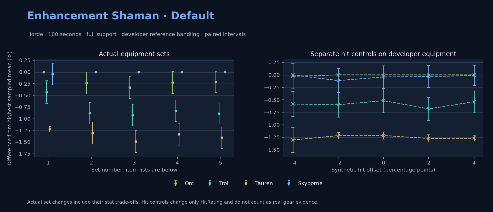

Horde · Orc / Troll / Tauren / Skyborne

No pet or guardian appears in the reference combat metrics. Reference: Orc, developer equipment, 180 seconds and full support. Pet choices remain those of the developer build.
WoWSims developer · Testing
180 seconds, full support and original developer references. Hit below is generic sheet melee / spell hit; school and talent bonuses can be attached directly to spells.
| Race | DPS | Gap and interval | Generic hit | Replay |
|---|---|---|---|---|
| Orc | 695.71 | +0.000% ± 0.000 | 8.9% / 8.9% | Native input · Website JSON |
| Skyborne | 695.36 | -0.050% ± 0.224 | 8.9% / 8.9% | Native input · Website JSON |
| Troll | 692.71 | -0.431% ± 0.245 | 8.9% / 8.9% | Native input · Website JSON |
| Tauren | 687.20 | -1.223% ± 0.058 | 8.9% / 8.9% | Native input · Website JSON |
| Slot | Item | ID | Enchant |
|---|---|---|---|
| Head | Blue Dragonscale Helm | 252604 | Lesser Arcane Amalgamation |
| Neck | Beads of Ogre Mojo | 22149 | Enchant Necklace - Spell Power |
| Shoulder | Mantle of the Timbermaw | 19050 | |
| Back | Arcanoweave Cloak | 272411 | Enchant Cloak - Lesser Agility |
| Chest | Vest of The Five Thunders | 227004 | Enchant Chest - Major Intellect |
| Wrist | Bands of The Five Thunders | 227017 | Enchant Bracer - Superior Intellect |
| Hands | Storm Gauntlets | 12632 | Enchant Gloves - Natural Power |
| Waist | Belt of the Archmage | 18405 | |
| Legs | Ironfeather Leggings | 252486 | Lesser Arcane Amalgamation |
| Feet | Slippers of The Five Thunders | 227007 | Mystic Rugged Armor Kit |
| Ring 1 | Ferocious Watcher's Signet | 275972 | |
| Ring 2 | Channeler's Ring | 272406 | |
| Trinket 1 | Weakness Analyzer | 272438 | |
| Trinket 2 | Frozen Heart of the Mountain | 249469 | |
| Main hand | Manual Crowd Pummeler | 9449 | Enchant 2H Weapon - Mighty Spell Power |
| Ranged / relic | Totem of the Storm | 23199 |
Published ranked alternatives · Published pre-raid
Recorded source replacements: [{"slot": "feet", "from": 22240, "to": 275618, "publishedAlternativeRank": 2, "publishedEpDelta": -38.3, "reason": "First published alternative compatible with the current WoWSims database, class, faction and occupied slots."}, {"slot": "finger2", "from": 17713, "to": 272408, "publishedAlternativeRank": 1, "publishedEpDelta": -1.3, "reason": "First published alternative compatible with the current WoWSims database, class, faction and occupied slots."}]
Unimplemented enchant or active set effects: [{"id": 143, "pieces": 2, "effects": ["Improves your chance to hit by 2.0%."]}]
Unmeasured proc rates: [{"source": "enchant", "id": 1900, "name": "Enchant Weapon - Crusader", "kind": "ppm", "origin": "vanilla"}]
180 seconds, full support and original developer references. Hit below is generic sheet melee / spell hit; school and talent bonuses can be attached directly to spells.
| Race | DPS | Gap and interval | Generic hit | Replay |
|---|---|---|---|---|
| Skyborne | 741.21 | +0.000% ± 0.000 | 7.7% / 7.7% | Native input · Website JSON |
| Orc | 739.46 | -0.237% ± 0.237 | 7.7% / 7.7% | Native input · Website JSON |
| Troll | 734.68 | -0.882% ± 0.230 | 7.7% / 7.7% | Native input · Website JSON |
| Tauren | 731.51 | -1.309% ± 0.238 | 7.7% / 7.7% | Native input · Website JSON |
| Slot | Item | ID | Enchant |
|---|---|---|---|
| Head | Black Dragonscale Helm | 252605 | Lesser Arcane Amalgamation |
| Neck | Archlight Talisman | 15856 | Enchant Necklace - Strength |
| Shoulder | Mantle of the Timbermaw | 19050 | |
| Back | Arcanoweave Cloak | 272411 | Enchant Cloak - Agility |
| Chest | Dawn Armor | 252483 | Enchant Chest - Greater Stats |
| Wrist | Wildheart Bracers | 16714 | Enchant Bracer - Greater Spellpower |
| Hands | Devilsaur Gauntlets | 15063 | Enchant Gloves - Superior Strength |
| Waist | Belt of the Archmage | 18405 | |
| Legs | Devilsaur Leggings | 15062 | Lesser Arcane Amalgamation |
| Feet | Scalegut Treaders | 275618 | Forceful Rugged Armor Kit |
| Ring 1 | Channeler's Ring | 272406 | |
| Ring 2 | Cutthroat's Signet | 272408 | |
| Trinket 1 | Adaptive Combat Assistant | 272437 | |
| Trinket 2 | Rune of the Guard Captain | 19120 | |
| Main hand | Arcanite Reaper | 12784 | Enchant Weapon - Crusader |
| Ranged / relic | Burning Totem | 272433 |
Published one-slot hit alternative · Published pre-raid
One source-listed alternative; at least 80% of the source slot score retained. Reported hit selects the contrast; only native stats determine simulation outcomes. This is an experimental combination, not an endorsed best set.
Recorded source replacements: [{"slot": "feet", "from": 22240, "to": 275618, "publishedAlternativeRank": 2, "publishedEpDelta": -38.3, "reason": "First published alternative compatible with the current WoWSims database, class, faction and occupied slots."}, {"slot": "finger2", "from": 17713, "to": 272408, "publishedAlternativeRank": 1, "publishedEpDelta": -1.3, "reason": "First published alternative compatible with the current WoWSims database, class, faction and occupied slots."}]
Unimplemented enchant or active set effects: [{"id": 143, "pieces": 2, "effects": ["Improves your chance to hit by 2.0%."]}]
Unmeasured proc rates: [{"source": "enchant", "id": 1900, "name": "Enchant Weapon - Crusader", "kind": "ppm", "origin": "vanilla"}]
180 seconds, full support and original developer references. Hit below is generic sheet melee / spell hit; school and talent bonuses can be attached directly to spells.
| Race | DPS | Gap and interval | Generic hit | Replay |
|---|---|---|---|---|
| Skyborne | 737.75 | +0.000% ± 0.000 | 6.7% / 6.7% | Native input · Website JSON |
| Orc | 735.30 | -0.332% ± 0.240 | 6.7% / 6.7% | Native input · Website JSON |
| Troll | 730.95 | -0.922% ± 0.230 | 6.7% / 6.7% | Native input · Website JSON |
| Tauren | 726.79 | -1.487% ± 0.236 | 6.7% / 6.7% | Native input · Website JSON |
| Slot | Item | ID | Enchant |
|---|---|---|---|
| Head | Black Dragonscale Helm | 252605 | Lesser Arcane Amalgamation |
| Neck | Archlight Talisman | 15856 | Enchant Necklace - Strength |
| Shoulder | Mantle of the Timbermaw | 19050 | |
| Back | Arcanoweave Cloak | 272411 | Enchant Cloak - Agility |
| Chest | Timbermaw Tunic | 252484 | Enchant Chest - Greater Stats |
| Wrist | Wildheart Bracers | 16714 | Enchant Bracer - Greater Spellpower |
| Hands | Devilsaur Gauntlets | 15063 | Enchant Gloves - Superior Strength |
| Waist | Belt of the Archmage | 18405 | |
| Legs | Devilsaur Leggings | 15062 | Lesser Arcane Amalgamation |
| Feet | Scalegut Treaders | 275618 | Forceful Rugged Armor Kit |
| Ring 1 | Channeler's Ring | 272406 | |
| Ring 2 | Cutthroat's Signet | 272408 | |
| Trinket 1 | Adaptive Combat Assistant | 272437 | |
| Trinket 2 | Rune of the Guard Captain | 19120 | |
| Main hand | Arcanite Reaper | 12784 | Enchant Weapon - Crusader |
| Ranged / relic | Burning Totem | 272433 |
Published one-slot hit alternative · Published pre-raid
One source-listed alternative; at least 80% of the source slot score retained. Reported hit selects the contrast; only native stats determine simulation outcomes. This is an experimental combination, not an endorsed best set.
Recorded source replacements: [{"slot": "feet", "from": 22240, "to": 275618, "publishedAlternativeRank": 2, "publishedEpDelta": -38.3, "reason": "First published alternative compatible with the current WoWSims database, class, faction and occupied slots."}, {"slot": "finger2", "from": 17713, "to": 272408, "publishedAlternativeRank": 1, "publishedEpDelta": -1.3, "reason": "First published alternative compatible with the current WoWSims database, class, faction and occupied slots."}]
Unimplemented enchant or active set effects: [{"id": 143, "pieces": 2, "effects": ["Improves your chance to hit by 2.0%."]}]
Unmeasured proc rates: [{"source": "enchant", "id": 1900, "name": "Enchant Weapon - Crusader", "kind": "ppm", "origin": "vanilla"}]
180 seconds, full support and original developer references. Hit below is generic sheet melee / spell hit; school and talent bonuses can be attached directly to spells.
| Race | DPS | Gap and interval | Generic hit | Replay |
|---|---|---|---|---|
| Skyborne | 741.66 | +0.000% ± 0.000 | 8.0% / 8.0% | Native input · Website JSON |
| Orc | 739.99 | -0.225% ± 0.236 | 8.0% / 8.0% | Native input · Website JSON |
| Troll | 735.50 | -0.830% ± 0.231 | 8.0% / 8.0% | Native input · Website JSON |
| Tauren | 731.78 | -1.333% ± 0.236 | 8.0% / 8.0% | Native input · Website JSON |
| Slot | Item | ID | Enchant |
|---|---|---|---|
| Head | Black Dragonscale Helm | 252605 | Lesser Arcane Amalgamation |
| Neck | Archlight Talisman | 15856 | Enchant Necklace - Strength |
| Shoulder | Mantle of the Timbermaw | 19050 | |
| Back | Arcanoweave Cloak | 272411 | Enchant Cloak - Agility |
| Chest | Dawn Armor | 252483 | Enchant Chest - Greater Stats |
| Wrist | Wildheart Bracers | 16714 | Enchant Bracer - Greater Spellpower |
| Hands | Devilsaur Gauntlets | 15063 | Enchant Gloves - Superior Strength |
| Waist | Belt of the Archmage | 18405 | |
| Legs | Devilsaur Leggings | 15062 | Lesser Arcane Amalgamation |
| Feet | Shadowcraft Boots | 16711 | Forceful Rugged Armor Kit |
| Ring 1 | Channeler's Ring | 272406 | |
| Ring 2 | Cutthroat's Signet | 272408 | |
| Trinket 1 | Adaptive Combat Assistant | 272437 | |
| Trinket 2 | Rune of the Guard Captain | 19120 | |
| Main hand | Arcanite Reaper | 12784 | Enchant Weapon - Crusader |
| Ranged / relic | Burning Totem | 272433 |
Published one-slot hit alternative · Published pre-raid
One source-listed alternative; at least 80% of the source slot score retained. Reported hit selects the contrast; only native stats determine simulation outcomes. This is an experimental combination, not an endorsed best set.
Recorded source replacements: [{"slot": "shoulder", "from": 227808, "to": 19050, "publishedAlternativeRank": 1, "publishedEpDelta": -16.7, "reason": "First published alternative compatible with the current WoWSims database, class, faction and occupied slots."}, {"slot": "waist", "from": 228190, "to": 18405, "publishedAlternativeRank": 1, "publishedEpDelta": -35.4, "reason": "First published alternative compatible with the current WoWSims database, class, faction and occupied slots."}, {"slot": "feet", "from": 22240, "to": 275618, "publishedAlternativeRank": 3, "publishedEpDelta": -38.3, "reason": "First published alternative compatible with the current WoWSims database, class, faction and occupied slots."}, {"slot": "finger2", "from": 17713, "to": 272408, "publishedAlternativeRank": 1, "publishedEpDelta": -1.3, "reason": "First published alternative compatible with the current WoWSims database, class, faction and occupied slots."}]
Unimplemented enchant or active set effects: [{"id": 143, "pieces": 2, "effects": ["Improves your chance to hit by 2.0%."]}]
Unmeasured proc rates: [{"source": "enchant", "id": 1900, "name": "Enchant Weapon - Crusader", "kind": "ppm", "origin": "vanilla"}]
180 seconds, full support and original developer references. Hit below is generic sheet melee / spell hit; school and talent bonuses can be attached directly to spells.
| Race | DPS | Gap and interval | Generic hit | Replay |
|---|---|---|---|---|
| Skyborne | 737.34 | +0.000% ± 0.000 | 6.9% / 6.9% | Native input · Website JSON |
| Orc | 735.76 | -0.214% ± 0.228 | 6.9% / 6.9% | Native input · Website JSON |
| Troll | 730.78 | -0.889% ± 0.226 | 6.9% / 6.9% | Native input · Website JSON |
| Tauren | 726.98 | -1.404% ± 0.229 | 6.9% / 6.9% | Native input · Website JSON |
| Slot | Item | ID | Enchant |
|---|---|---|---|
| Head | Black Dragonscale Helm | 252605 | Lesser Arcane Amalgamation |
| Neck | Archlight Talisman | 15856 | Enchant Necklace - Strength |
| Shoulder | Mantle of the Timbermaw | 19050 | |
| Back | Arcanoweave Cloak | 272411 | Enchant Cloak - Agility |
| Chest | Timbermaw Tunic | 252484 | Enchant Chest - Greater Stats |
| Wrist | Wildheart Bracers | 16714 | Enchant Bracer - Greater Spellpower |
| Hands | Devilsaur Gauntlets | 15063 | Enchant Gloves - Superior Strength |
| Waist | Belt of the Archmage | 18405 | |
| Legs | Devilsaur Leggings | 15062 | Lesser Arcane Amalgamation |
| Feet | Scalegut Treaders | 275618 | Forceful Rugged Armor Kit |
| Ring 1 | Channeler's Ring | 272406 | |
| Ring 2 | Cutthroat's Signet | 272408 | |
| Trinket 1 | Adaptive Combat Assistant | 272437 | |
| Trinket 2 | Frozen Heart of the Mountain | 249469 | |
| Main hand | Arcanite Reaper | 12784 | Enchant Weapon - Crusader |
| Ranged / relic | Burning Totem | 272433 |
The same declared pool is available to every race. Each race keeps its best validation-sample set with its screening-selected racial policy. Separate samples confirm that choice, with fresh precision samples near the practical-loss boundary. Gaps use the highest sampled mean under that same duration, support and reference treatment as their reference. A zero reference gap does not certify a race; the main matrix also allows uncertainty in the leader.
| Pool | Seconds | Support | References | Race | DPS | Gap and interval | Racial policies / mana | Selected set | Generic hit: melee / spell | Replay |
|---|---|---|---|---|---|---|---|---|---|---|
| published-pre-raid | 60 | full | developer | Troll | 789.09 | +0.000% ± 0.00020,000 iterations | developer / developer / developerMana waits 0.0s | published-shaman-enhancement-horde-05207e11a8917a4d-higher-hit | 8.0% / 8.0% | Input · Result · Stats |
| published-pre-raid | 60 | full | developer | Orc | 788.17 | -0.116% ± 0.07920,000 iterations | developer / developer / developerMana waits 0.0s | published-shaman-enhancement-horde-05207e11a8917a4d-higher-hit | 8.0% / 8.0% | Input · Result · Stats |
| published-pre-raid | 60 | full | developer | Skyborne | 786.83 | -0.285% ± 0.06720,000 iterations | developer / developer / developerMana waits 0.0s | published-shaman-enhancement-horde-05207e11a8917a4d-higher-hit | 8.0% / 8.0% | Input · Result · Stats |
| published-pre-raid | 60 | full | developer | Tauren | 774.69 | -1.824% ± 0.07820,000 iterations | developer / developer / developerMana waits 0.0s | published-shaman-enhancement-horde-05207e11a8917a4d-higher-hit | 8.0% / 8.0% | Input · Result · Stats |
| published-pre-raid | 60 | full | explicit | Troll | 788.99 | +0.000% ± 0.00020,000 iterations | developer / developer / developerMana waits 0.0s | published-shaman-enhancement-horde-05207e11a8917a4d-higher-hit | 8.0% / 8.0% | Input · Result · Stats |
| published-pre-raid | 60 | full | explicit | Orc | 788.12 | -0.111% ± 0.07920,000 iterations | developer / developer / developerMana waits 0.0s | published-shaman-enhancement-horde-05207e11a8917a4d-higher-hit | 8.0% / 8.0% | Input · Result · Stats |
| published-pre-raid | 60 | full | explicit | Skyborne | 786.71 | -0.290% ± 0.06820,000 iterations | developer / developer / developerMana waits 0.0s | published-shaman-enhancement-horde-05207e11a8917a4d-higher-hit | 8.0% / 8.0% | Input · Result · Stats |
| published-pre-raid | 60 | full | explicit | Tauren | 774.67 | -1.815% ± 0.07920,000 iterations | developer / developer / developerMana waits 0.0s | published-shaman-enhancement-horde-05207e11a8917a4d-higher-hit | 8.0% / 8.0% | Input · Result · Stats |
| published-pre-raid | 60 | self | developer | Troll | 519.24 | +0.000% ± 0.00020,000 iterations | developer / developer / developerMana waits 0.0s | published-shaman-enhancement-horde-05207e11a8917a4d-higher-hit | 8.0% / 8.0% | Input · Result · Stats |
| published-pre-raid | 60 | self | developer | Orc | 518.18 | -0.204% ± 0.07620,000 iterations | developer / developer / developerMana waits 0.0s | published-shaman-enhancement-horde-05207e11a8917a4d-higher-hit | 8.0% / 8.0% | Input · Result · Stats |
| published-pre-raid | 60 | self | developer | Skyborne | 517.78 | -0.282% ± 0.06520,000 iterations | developer / developer / developerMana waits 0.0s | published-shaman-enhancement-horde-05207e11a8917a4d-higher-hit | 8.0% / 8.0% | Input · Result · Stats |
| published-pre-raid | 60 | self | developer | Tauren | 510.49 | -1.685% ± 0.08020,000 iterations | developer / developer / developerMana waits 0.0s | published-shaman-enhancement-horde-05207e11a8917a4d | 7.7% / 7.7% | Input · Result · Stats |
| published-pre-raid | 60 | self | explicit | Troll | 510.26 | +0.000% ± 0.00020,000 iterations | developer / developer / developerMana waits 3.0s | published-shaman-enhancement-horde-05207e11a8917a4d-higher-hit | 8.0% / 8.0% | Input · Result · Stats |
| published-pre-raid | 60 | self | explicit | Orc | 510.14 | -0.023% ± 0.07920,000 iterations | developer / developer / developerMana waits 2.7s | published-shaman-enhancement-horde-05207e11a8917a4d-higher-hit | 8.0% / 8.0% | Input · Result · Stats |
| published-pre-raid | 60 | self | explicit | Skyborne | 509.67 | -0.115% ± 0.06820,000 iterations | developer / developer / developerMana waits 2.7s | published-shaman-enhancement-horde-05207e11a8917a4d-higher-hit | 8.0% / 8.0% | Input · Result · Stats |
| published-pre-raid | 60 | self | explicit | Tauren | 501.92 | -1.635% ± 0.08220,000 iterations | developer / developer / developerMana waits 3.0s | published-shaman-enhancement-horde-05207e11a8917a4d | 7.7% / 7.7% | Input · Result · Stats |
| published-pre-raid | 180 | full | developer | Skyborne | 740.52 | +0.000% ± 0.0005,000 iterations | developer / developer / developerMana waits 2.3s | published-shaman-enhancement-horde-05207e11a8917a4d-higher-hit | 8.0% / 8.0% | Input · Result · Stats · Website JSON |
| published-pre-raid | 180 | full | developer | Orc | 738.05 | -0.334% ± 0.1025,000 iterations | oncd / developer / developerMana waits 2.4s | published-shaman-enhancement-horde-05207e11a8917a4d-higher-hit | 8.0% / 8.0% | Input · Result · Stats · Website JSON |
| published-pre-raid | 180 | full | developer | Troll | 734.64 | -0.794% ± 0.1005,000 iterations | developer / developer / developerMana waits 2.5s | published-shaman-enhancement-horde-05207e11a8917a4d-higher-hit | 8.0% / 8.0% | Input · Result · Stats · Website JSON |
| published-pre-raid | 180 | full | developer | Tauren | 729.82 | -1.445% ± 0.1025,000 iterations | developer / developer / developerMana waits 2.7s | published-shaman-enhancement-horde-05207e11a8917a4d-higher-hit | 8.0% / 8.0% | Input · Result · Stats · Website JSON |
| published-pre-raid | 180 | full | explicit | Skyborne | 719.84 | +0.000% ± 0.0005,000 iterations | developer / developer / developerMana waits 30.6s | published-shaman-enhancement-horde-05207e11a8917a4d-higher-hit | 8.0% / 8.0% | Input · Result · Stats |
| published-pre-raid | 180 | full | explicit | Orc | 717.51 | -0.323% ± 0.1085,000 iterations | oncd / developer / developerMana waits 30.6s | published-shaman-enhancement-horde-05207e11a8917a4d-higher-hit | 8.0% / 8.0% | Input · Result · Stats |
| published-pre-raid | 180 | full | explicit | Troll | 714.41 | -0.754% ± 0.1075,000 iterations | developer / developer / developerMana waits 31.1s | published-shaman-enhancement-horde-05207e11a8917a4d-higher-hit | 8.0% / 8.0% | Input · Result · Stats |
| published-pre-raid | 180 | full | explicit | Tauren | 709.11 | -1.490% ± 0.1075,000 iterations | developer / developer / developerMana waits 31.5s | published-shaman-enhancement-horde-05207e11a8917a4d-higher-hit | 8.0% / 8.0% | Input · Result · Stats |
| published-pre-raid | 180 | self | developer | Skyborne | 421.75 | +0.000% ± 0.00020,000 iterations | developer / developer / developerMana waits 72.5s | published-shaman-enhancement-horde-05207e11a8917a4d-higher-hit | 8.0% / 8.0% | Input · Result · Stats |
| published-pre-raid | 180 | self | developer | Orc | 421.24 | -0.122% ± 0.05820,000 iterations | developer / developer / developerMana waits 72.3s | published-shaman-enhancement-horde-05207e11a8917a4d-higher-hit | 8.0% / 8.0% | Input · Result · Stats |
| published-pre-raid | 180 | self | developer | Troll | 418.95 | -0.665% ± 0.06020,000 iterations | developer / developer / developerMana waits 72.8s | published-shaman-enhancement-horde-05207e11a8917a4d | 7.7% / 7.7% | Input · Result · Stats |
| published-pre-raid | 180 | self | developer | Tauren | 416.35 | -1.281% ± 0.05820,000 iterations | developer / developer / developerMana waits 72.7s | published-shaman-enhancement-horde-05207e11a8917a4d-higher-hit | 8.0% / 8.0% | Input · Result · Stats |
| published-pre-raid | 180 | self | explicit | Skyborne | 392.13 | +0.000% ± 0.00020,000 iterations | developer / developer / developerMana waits 99.4s | published-shaman-enhancement-horde-05207e11a8917a4d | 7.7% / 7.7% | Input · Result · Stats |
| published-pre-raid | 180 | self | explicit | Orc | 391.66 | -0.120% ± 0.06020,000 iterations | oncd / developer / developerMana waits 98.8s | published-shaman-enhancement-horde-05207e11a8917a4d-higher-hit | 8.0% / 8.0% | Input · Result · Stats |
| published-pre-raid | 180 | self | explicit | Troll | 389.65 | -0.631% ± 0.06220,000 iterations | developer / developer / developerMana waits 99.7s | published-shaman-enhancement-horde-05207e11a8917a4d-higher-hit | 8.0% / 8.0% | Input · Result · Stats |
| published-pre-raid | 180 | self | explicit | Tauren | 386.86 | -1.342% ± 0.06020,000 iterations | developer / developer / developerMana waits 99.4s | published-shaman-enhancement-horde-05207e11a8917a4d-higher-hit | 8.0% / 8.0% | Input · Result · Stats |
| published-pre-raid | 300 | full | developer | Skyborne | 719.65 | +0.000% ± 0.00020,000 iterations | developer / developer / developerMana waits 47.6s | published-shaman-enhancement-horde-05207e11a8917a4d-higher-hit | 8.0% / 8.0% | Input · Result · Stats |
| published-pre-raid | 300 | full | developer | Orc | 716.48 | -0.440% ± 0.04520,000 iterations | developer / developer / developerMana waits 47.5s | published-shaman-enhancement-horde-05207e11a8917a4d-higher-hit | 8.0% / 8.0% | Input · Result · Stats |
| published-pre-raid | 300 | full | developer | Troll | 714.89 | -0.662% ± 0.04420,000 iterations | developer / developer / developerMana waits 48.1s | published-shaman-enhancement-horde-05207e11a8917a4d-higher-hit | 8.0% / 8.0% | Input · Result · Stats |
| published-pre-raid | 300 | full | developer | Tauren | 709.33 | -1.433% ± 0.04520,000 iterations | developer / developer / developerMana waits 48.4s | published-shaman-enhancement-horde-05207e11a8917a4d-higher-hit | 8.0% / 8.0% | Input · Result · Stats |
| published-pre-raid | 300 | full | explicit | Skyborne | 694.66 | +0.000% ± 0.00020,000 iterations | developer / developer / developerMana waits 105.9s | published-shaman-enhancement-horde-05207e11a8917a4d-higher-hit | 8.0% / 8.0% | Input · Result · Stats |
| published-pre-raid | 300 | full | explicit | Orc | 691.61 | -0.439% ± 0.04720,000 iterations | developer / developer / developerMana waits 105.4s | published-shaman-enhancement-horde-05207e11a8917a4d-higher-hit | 8.0% / 8.0% | Input · Result · Stats |
| published-pre-raid | 300 | full | explicit | Troll | 689.99 | -0.672% ± 0.04620,000 iterations | developer / developer / developerMana waits 105.8s | published-shaman-enhancement-horde-05207e11a8917a4d-higher-hit | 8.0% / 8.0% | Input · Result · Stats |
| published-pre-raid | 300 | full | explicit | Tauren | 684.45 | -1.471% ± 0.04720,000 iterations | developer / developer / developerMana waits 106.3s | published-shaman-enhancement-horde-05207e11a8917a4d-higher-hit | 8.0% / 8.0% | Input · Result · Stats |
| published-pre-raid | 300 | self | developer | Skyborne | 396.56 | +0.000% ± 0.00020,000 iterations | developer / developer / developerMana waits 159.3s | published-shaman-enhancement-horde-05207e11a8917a4d-higher-hit | 8.0% / 8.0% | Input · Result · Stats |
| published-pre-raid | 300 | self | developer | Orc | 395.62 | -0.237% ± 0.05020,000 iterations | developer / developer / developerMana waits 158.9s | published-shaman-enhancement-horde-05207e11a8917a4d-higher-hit | 8.0% / 8.0% | Input · Result · Stats |
| published-pre-raid | 300 | self | developer | Troll | 394.32 | -0.564% ± 0.05020,000 iterations | developer / developer / developerMana waits 159.4s | published-shaman-enhancement-horde-05207e11a8917a4d-higher-hit | 8.0% / 8.0% | Input · Result · Stats |
| published-pre-raid | 300 | self | developer | Tauren | 391.34 | -1.316% ± 0.04920,000 iterations | developer / developer / developerMana waits 159.3s | published-shaman-enhancement-horde-05207e11a8917a4d-higher-hit | 8.0% / 8.0% | Input · Result · Stats |
| published-pre-raid | 300 | self | explicit | Skyborne | 368.06 | +0.000% ± 0.00020,000 iterations | developer / developer / developerMana waits 202.1s | published-shaman-enhancement-horde-05207e11a8917a4d | 7.7% / 7.7% | Input · Result · Stats |
| published-pre-raid | 300 | self | explicit | Orc | 367.17 | -0.241% ± 0.05220,000 iterations | developer / developer / developerMana waits 201.6s | published-shaman-enhancement-horde-05207e11a8917a4d-higher-hit | 8.0% / 8.0% | Input · Result · Stats |
| published-pre-raid | 300 | self | explicit | Troll | 366.21 | -0.501% ± 0.05220,000 iterations | developer / developer / developerMana waits 202.2s | published-shaman-enhancement-horde-05207e11a8917a4d-higher-hit | 8.0% / 8.0% | Input · Result · Stats |
| published-pre-raid | 300 | self | explicit | Tauren | 363.07 | -1.356% ± 0.05020,000 iterations | developer / developer / developerMana waits 202.0s | published-shaman-enhancement-horde-05207e11a8917a4d | 7.7% / 7.7% | Input · Result · Stats |
| developer-reference | 60 | full | developer | Orc | 789.48 | +0.000% ± 0.00020,000 iterations | developer / developer / developerMana waits 0.0s | developer | 8.9% / 8.9% | Input · Result · Stats |
| developer-reference | 60 | full | developer | Troll | 789.36 | -0.016% ± 0.08320,000 iterations | developer / developer / developerMana waits 0.0s | developer | 8.9% / 8.9% | Input · Result · Stats |
| developer-reference | 60 | full | developer | Skyborne | 784.11 | -0.680% ± 0.06920,000 iterations | developer / developer / developerMana waits 0.0s | developer | 8.9% / 8.9% | Input · Result · Stats |
| developer-reference | 60 | full | developer | Tauren | 773.60 | -2.012% ± 0.01220,000 iterations | developer / developer / developerMana waits 0.0s | developer | 8.9% / 8.9% | Input · Result · Stats |
| developer-reference | 60 | full | explicit | Orc | 789.45 | +0.000% ± 0.00020,000 iterations | developer / developer / developerMana waits 0.0s | developer | 8.9% / 8.9% | Input · Result · Stats |
| developer-reference | 60 | full | explicit | Troll | 789.44 | -0.000% ± 0.08420,000 iterations | developer / developer / developerMana waits 0.0s | developer | 8.9% / 8.9% | Input · Result · Stats |
| developer-reference | 60 | full | explicit | Skyborne | 784.13 | -0.673% ± 0.06920,000 iterations | developer / developer / developerMana waits 0.0s | developer | 8.9% / 8.9% | Input · Result · Stats |
| developer-reference | 60 | full | explicit | Tauren | 773.60 | -2.008% ± 0.01320,000 iterations | developer / developer / developerMana waits 0.0s | developer | 8.9% / 8.9% | Input · Result · Stats |
| developer-reference | 60 | self | developer | Orc | 526.70 | +0.000% ± 0.00020,000 iterations | developer / developer / developerMana waits 0.0s | developer | 8.9% / 8.9% | Input · Result · Stats |
| developer-reference | 60 | self | developer | Troll | 526.42 | -0.052% ± 0.09120,000 iterations | developer / developer / developerMana waits 0.0s | developer | 8.9% / 8.9% | Input · Result · Stats |
| developer-reference | 60 | self | developer | Skyborne | 524.07 | -0.499% ± 0.07620,000 iterations | developer / developer / developerMana waits 0.0s | developer | 8.9% / 8.9% | Input · Result · Stats |
| developer-reference | 60 | self | developer | Tauren | 517.64 | -1.719% ± 0.01520,000 iterations | developer / developer / developerMana waits 0.0s | developer | 8.9% / 8.9% | Input · Result · Stats |
| developer-reference | 60 | self | explicit | Orc | 526.74 | +0.000% ± 0.00020,000 iterations | developer / developer / developerMana waits 0.0s | developer | 8.9% / 8.9% | Input · Result · Stats |
| developer-reference | 60 | self | explicit | Troll | 526.33 | -0.078% ± 0.09020,000 iterations | developer / developer / developerMana waits 0.0s | developer | 8.9% / 8.9% | Input · Result · Stats |
| developer-reference | 60 | self | explicit | Skyborne | 524.03 | -0.515% ± 0.07720,000 iterations | developer / developer / developerMana waits 0.0s | developer | 8.9% / 8.9% | Input · Result · Stats |
| developer-reference | 60 | self | explicit | Tauren | 517.67 | -1.722% ± 0.01520,000 iterations | developer / developer / developerMana waits 0.0s | developer | 8.9% / 8.9% | Input · Result · Stats |
| developer-reference | 180 | full | developer | Orc | 695.48 | +0.000% ± 0.0005,000 iterations | developer / developer / developerMana waits 0.0s | developer | 8.9% / 8.9% | Input · Result · Stats · Website JSON |
| developer-reference | 180 | full | developer | Skyborne | 695.11 | -0.054% ± 0.1005,000 iterations | developer / developer / developerMana waits 0.0s | developer | 8.9% / 8.9% | Input · Result · Stats · Website JSON |
| developer-reference | 180 | full | developer | Troll | 691.97 | -0.505% ± 0.1065,000 iterations | developer / developer / developerMana waits 0.0s | developer | 8.9% / 8.9% | Input · Result · Stats · Website JSON |
| developer-reference | 180 | full | developer | Tauren | 686.67 | -1.267% ± 0.0235,000 iterations | developer / developer / developerMana waits 0.0s | developer | 8.9% / 8.9% | Input · Result · Stats · Website JSON |
| developer-reference | 180 | full | explicit | Orc | 694.45 | +0.000% ± 0.0005,000 iterations | developer / developer / developerMana waits 0.9s | developer | 8.9% / 8.9% | Input · Result · Stats |
| developer-reference | 180 | full | explicit | Skyborne | 694.23 | -0.033% ± 0.1025,000 iterations | developer / developer / developerMana waits 0.9s | developer | 8.9% / 8.9% | Input · Result · Stats |
| developer-reference | 180 | full | explicit | Troll | 690.92 | -0.509% ± 0.1095,000 iterations | developer / developer / developerMana waits 1.0s | developer | 8.9% / 8.9% | Input · Result · Stats |
| developer-reference | 180 | full | explicit | Tauren | 685.53 | -1.286% ± 0.0275,000 iterations | developer / developer / developerMana waits 1.0s | developer | 8.9% / 8.9% | Input · Result · Stats |
| developer-reference | 180 | self | developer | Orc | 419.24 | +0.000% ± 0.00020,000 iterations | developer / developer / developerMana waits 53.5s | developer | 8.9% / 8.9% | Input · Result · Stats |
| developer-reference | 180 | self | developer | Skyborne | 418.54 | -0.167% ± 0.06120,000 iterations | developer / developer / developerMana waits 53.7s | developer | 8.9% / 8.9% | Input · Result · Stats |
| developer-reference | 180 | self | developer | Troll | 416.83 | -0.575% ± 0.06520,000 iterations | developer / developer / developerMana waits 54.2s | developer | 8.9% / 8.9% | Input · Result · Stats |
| developer-reference | 180 | self | developer | Tauren | 413.84 | -1.288% ± 0.04220,000 iterations | developer / developer / developerMana waits 54.0s | developer | 8.9% / 8.9% | Input · Result · Stats |
| developer-reference | 180 | self | explicit | Orc | 382.07 | +0.000% ± 0.00020,000 iterations | oncd / developer / developerMana waits 87.0s | developer | 8.9% / 8.9% | Input · Result · Stats |
| developer-reference | 180 | self | explicit | Skyborne | 381.52 | -0.144% ± 0.06220,000 iterations | developer / developer / developerMana waits 87.5s | developer | 8.9% / 8.9% | Input · Result · Stats |
| developer-reference | 180 | self | explicit | Troll | 379.84 | -0.582% ± 0.06720,000 iterations | developer / developer / developerMana waits 87.8s | developer | 8.9% / 8.9% | Input · Result · Stats |
| developer-reference | 180 | self | explicit | Tauren | 376.83 | -1.372% ± 0.04320,000 iterations | developer / developer / developerMana waits 87.7s | developer | 8.9% / 8.9% | Input · Result · Stats |
| developer-reference | 300 | full | developer | Skyborne | 698.12 | +0.000% ± 0.00020,000 iterations | developer / developer / developerMana waits 1.6s | developer | 8.9% / 8.9% | Input · Result · Stats |
| developer-reference | 300 | full | developer | Orc | 696.43 | -0.242% ± 0.04120,000 iterations | developer / developer / developerMana waits 1.6s | developer | 8.9% / 8.9% | Input · Result · Stats |
| developer-reference | 300 | full | developer | Troll | 695.83 | -0.328% ± 0.04120,000 iterations | developer / developer / developerMana waits 1.6s | developer | 8.9% / 8.9% | Input · Result · Stats |
| developer-reference | 300 | full | developer | Tauren | 689.03 | -1.302% ± 0.04120,000 iterations | developer / developer / developerMana waits 1.8s | developer | 8.9% / 8.9% | Input · Result · Stats |
| developer-reference | 300 | full | explicit | Skyborne | 678.73 | +0.000% ± 0.00020,000 iterations | developer / developer / developerMana waits 42.1s | developer | 8.9% / 8.9% | Input · Result · Stats |
| developer-reference | 300 | full | explicit | Orc | 677.45 | -0.189% ± 0.04420,000 iterations | oncd / developer / developerMana waits 41.7s | developer | 8.9% / 8.9% | Input · Result · Stats |
| developer-reference | 300 | full | explicit | Troll | 676.60 | -0.315% ± 0.04420,000 iterations | developer / developer / developerMana waits 41.8s | developer | 8.9% / 8.9% | Input · Result · Stats |
| developer-reference | 300 | full | explicit | Tauren | 669.81 | -1.315% ± 0.04420,000 iterations | developer / developer / developerMana waits 42.7s | developer | 8.9% / 8.9% | Input · Result · Stats |
| developer-reference | 300 | self | developer | Orc | 389.39 | +0.000% ± 0.00020,000 iterations | developer / developer / developerMana waits 139.4s | developer | 8.9% / 8.9% | Input · Result · Stats |
| developer-reference | 300 | self | developer | Skyborne | 389.26 | -0.035% ± 0.05320,000 iterations | developer / developer / developerMana waits 139.9s | developer | 8.9% / 8.9% | Input · Result · Stats |
| developer-reference | 300 | self | developer | Troll | 388.26 | -0.289% ± 0.05520,000 iterations | oncd / developer / developerMana waits 139.9s | developer | 8.9% / 8.9% | Input · Result · Stats |
| developer-reference | 300 | self | developer | Tauren | 384.76 | -1.190% ± 0.04320,000 iterations | developer / developer / developerMana waits 140.0s | developer | 8.9% / 8.9% | Input · Result · Stats |
| developer-reference | 300 | self | explicit | Orc | 354.88 | +0.000% ± 0.00020,000 iterations | developer / developer / developerMana waits 189.0s | developer | 8.9% / 8.9% | Input · Result · Stats |
| developer-reference | 300 | self | explicit | Skyborne | 354.81 | -0.019% ± 0.05320,000 iterations | developer / developer / developerMana waits 189.4s | developer | 8.9% / 8.9% | Input · Result · Stats |
| developer-reference | 300 | self | explicit | Troll | 353.97 | -0.256% ± 0.05520,000 iterations | oncd / developer / developerMana waits 189.4s | developer | 8.9% / 8.9% | Input · Result · Stats |
| developer-reference | 300 | self | explicit | Tauren | 350.54 | -1.221% ± 0.04320,000 iterations | developer / developer / developerMana waits 189.5s | developer | 8.9% / 8.9% | Input · Result · Stats |
180 seconds, full support and the developer equipment anchor. These checks test creature sensitivity without a full gear search.
| Target | References | Race | DPS | Gap and interval | Replay |
|---|---|---|---|---|---|
| beast | developer | Troll | 726.26 | +0.000% ± 0.000 | Input · Result |
| beast | developer | Orc | 695.65 | -4.214% ± 0.235 | Input · Result |
| beast | developer | Skyborne | 695.36 | -4.254% ± 0.228 | Input · Result |
| beast | developer | Tauren | 687.20 | -5.378% ± 0.232 | Input · Result |
| beast | explicit | Troll | 725.17 | +0.000% ± 0.000 | Input · Result |
| beast | explicit | Orc | 695.08 | -4.150% ± 0.234 | Input · Result |
| beast | explicit | Skyborne | 694.34 | -4.252% ± 0.230 | Input · Result |
| beast | explicit | Tauren | 686.16 | -5.379% ± 0.228 | Input · Result |
| elemental | developer | Skyborne | 729.72 | +0.000% ± 0.000 | Input · Result |
| elemental | developer | Orc | 695.65 | -4.669% ± 0.214 | Input · Result |
| elemental | developer | Troll | 692.06 | -5.161% ± 0.226 | Input · Result |
| elemental | developer | Tauren | 687.20 | -5.827% ± 0.211 | Input · Result |
| elemental | explicit | Skyborne | 728.65 | +0.000% ± 0.000 | Input · Result |
| elemental | explicit | Orc | 695.08 | -4.607% ± 0.215 | Input · Result |
| elemental | explicit | Troll | 691.03 | -5.163% ± 0.227 | Input · Result |
| elemental | explicit | Tauren | 686.16 | -5.831% ± 0.208 | Input · Result |
Some equipment has unimplemented enchant or set effects; Some equipment uses unmeasured proc rates; Sensitive to unavailable rotation references
These known-issue notes are source context. Runtime checks establish current cast coverage, including Mutilate. They do not prove every mechanic matches the game.